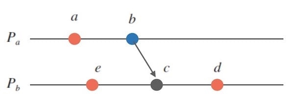
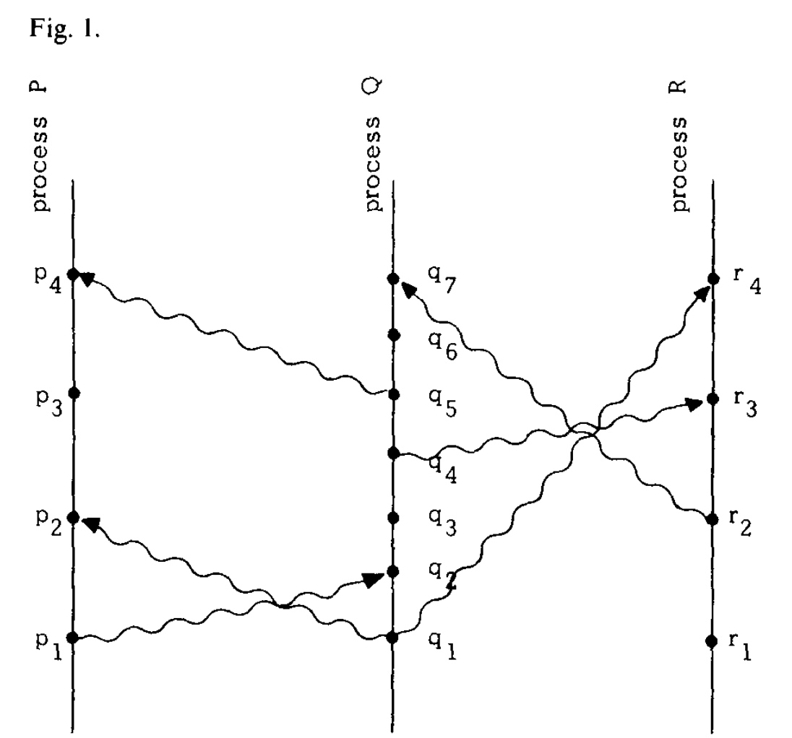
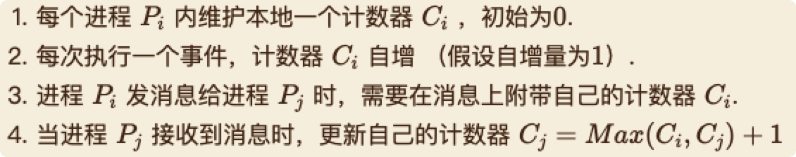

协同计算之数学基础（1）- 偏序关系与逻辑时钟

目录
在分布式协同计算系统中，认识到事件的发生顺序只是一个偏序关系是非常重要的。我们认为这个认知对于理解所有多进程系统非常有用。 本文介绍某些与协同计算有关的数学基础知识。
1. 集合
集合：将若干个可以确定的，可分辨的对象构成的无序整体称为集合（Set），通常用大写字母表示。
定义 1.1
组成集合的对象称作该集合的元素（element），常用小写字母表示。
若对象 a 是集合 S 的元素，记作: $$a \in S$$ 若对象 a 不是集合 S 的元素，记作: \[a \notin S\]
定义 1.2
设 A 和 B 是两个集合， 如果 A 的任意一个元素都是 B 的元素，则称 A 为 B 的子集，称 B 为 A 的超集，记作：\[A \subseteq B\] 或者：\[B \supseteq A\]
定义 1.3
一个集合 A 所包含的元素数目称为该集合的基数（或者势），记作：$$|A|$$，或者 card(A)
定义 1.4
假设 A 是集合，A 的所有子集所组成的集合称为 A 的幂集（power set），记作：\[{\rm P}(A)\]，即：
\[{\rm P}(A) = \left\{ {x|x \subseteq A} \right\}\]2. 命题逻辑
数理逻辑的主要研究内容和目标是推理。逻辑语言中仅仅考虑命题与命题之间的形式关系，而不考虑命题内容的实际含义，更不顾及日常自然用语中是否有此说法。
定义 2.1
非真即假的陈述句称为“命题”
定义 2.2
设 p, q 为命题，蕴涵词(implication) \[ \Rightarrow \] 是二元联结词，\[p \Rightarrow q\] 读作：”若p，则q"，其中，p称作前提词，q称作结论。当且仅当p为真，q为假时，该二元复合命题才为假。
定义 2.3
只有命题公式表示的符号串，才是命题
3. 谓词逻辑
原子命题是命题逻辑中最基本的组成单元，不能对其进一步分解，也无法反映出原子命题的一些特征和相互关系。为了克服命题逻辑的这一不足，进一步引入了谓词逻辑。
在谓词逻辑中，一般将原子命题分解为个体词和谓词两部分。
定义 3.1
个体词是一个命题中表示思维对象的词
定义 3.2
在命题中，表示个体词性质或个体词之间的相互关系的词，称为谓词
定义 3.3
用来表示个体数量的词，称为量词
定理 3.4
设论域 \[D = \left\{ {{a_1},{a_2},...,{a_m}} \right\}\] 是有限集合，则有
\[(\forall x)P(x) \equiv P({a_1}) \wedge P({a_2}) \wedge ... \wedge P({a_m})\] \[(\exists x)P(x) \equiv P({a_1}) \vee P({a_2}) \vee ... \vee P({a_m})\]定理 3.5
设 P(x) 是含有 x 自由出现的公式，则有：
\[\begin{array}{l} \sim (\forall x)P(x) \equiv (\exists x) \sim P(x) \\ \sim (\exists x)P(x) \equiv (\forall x) \sim P(x) \end{array}\]4. 关系
描述集合之间的关系，需要引入体现“次序”的数学结构。
定义 4.1
由两个对象 a, b 按照一定次序组成的二元组称为一个有序对（或者序偶），记作：(a, b)
定义 4.2
设 A、B 为两个集合，定义它们的笛卡儿积 AXB 为：
\[A \times B = \left\{ {(a,b)|a \in A 且 b \in B} \right\}\]笛卡儿积包含了 A 到 B 之间的全部序偶，对于部分序偶组成的集合，需要进行定义，便引出了“关系”的概念。
定义 4.3
假设 A, B 是集合，AXB 的子集 R 称为 A 到 B 的一个二元关系，简称关系
定义 4.4
设 R 为集合 A 上的关系，若
(a) 如果
\[\forall a \in A,(a,a) \in R\]成立，则称 R 是自反的（reflexive)
(b) 如果
\[\forall a \in A,(a,a) \notin R\]成立，则称 R 是非自反的（irreflexive)
(c) 如果
\[\forall a,b \in A,(a,b) \in R \Rightarrow (b,a) \in R\]成立，则称 R 是对称的（symmetric)
(d) 如果
\[\forall a,b \in A,(a,b) \in R \Rightarrow (b,a) \notin R\]成立，则称 R 是非对称的（asymmetric）
(e) 如果
\[\forall a,b \in A,(a,b) \in R\& (b,a) \in R \Rightarrow a = b\]成立，则称 R 是反对称的（antisymmetric）
(f) 如果
\[\forall a,b,c \in A,(a,b) \in R\& (b,c) \in R \Rightarrow (a,c) \in R\]成立，则称 R 是传递的（transitive）
示例
- A 上的空关系满足非自反性，对称性，非对称性，反对称性，传递性
- A 上的“小于等于”关系，是自反的，反对称的，传递的
- A 上的“小于”关系，是非自反的，反对称的，传递的
- A 上的“不等于”关系，是非自反的，对称的
关系特性在“关系图”上的表现
- 自反：每个顶点都有自环
- 非自反：每个顶点都没有自环
- 对称：如果两个顶点之间有边，一定是一对方向相反的边
- 非对称：两个顶点之间至多存在一条有向边，每个顶点都没有自环
- 反对称：两个互异顶点之间至多存在一条有向边，允许存在自环
- 传递：如果存在有向边(i,j)和(j,k)，则存在有向边(i,k)
定义 4.5
假设 R 是非空集合 A 上的关系，如果 R 是自反的、对称的和传递的，则称 R 是 A 上的等价关系
5. 偏序关系
“次序”是进行对比（compare）的基础，“偏序关系”是一种重要的“次序”关系
定义 5.1
假设 R 是集合 A 上的关系，若 R 是自反的、反对称的和传递的，则称 R 是 A 上的一个偏序(partial order)或半序（semi order）关系，一般记作：\[ \le \]
集合 A 和偏序关系 R 构成的有序二元组（A, R）称作偏序集（或半序集）
示例
- 小于等于、大于等于、整除、倍数关系、包含关系都是相应集合上的偏序关系
\[(A, \le ) 是偏序集, B \subseteq A \Rightarrow (B,{ \le _{|B}}) 也是偏序集\]定理 5.2
定理 5.3
若 R 为 A 上的偏序关系，则 R 的逆关系也是 A 上的偏序关系
定义 5.4
假设（A, R) 为偏序集，
\[a,b \in A ，如果存在 (a \le b) 或 (b \le a)\]则称 a, b 是可比的（comparable)
定义 5.5
假设 (A, R) 是偏序集，如果对于
\[\forall a,b \in A 都有 (a \le b) \wedge (b \le a)\]则称 R 是线序（linear order）或全序（total order），（A, R) 称作全序集，也称为链（chain）
定义 5.6
假设 R 是集合 A 上的关系，如果 R 是非自反的和传递的，则称 R 是 A 上的一个拟序（quasiorder）关系，一般记作：<
定义 5.7
假设
\[(A,{ \le _1})\] 和 \[(A,{ \le _2})\]
可以定义，在 AxB 上的偏序关系
\[(a,b) \le ({a^*},{b^*}) \Leftrightarrow (a{ \le _1}{a^*}) \wedge (b{ \le _2}{b^*})\]称为积偏序，记作
\[(A \times B, \le ) = (A,{ \le _1}) \times (B,{ \le _2})\]定义 5.8
假设两个偏序集，
\[(A,{ \le _1})\] 和 \[(B,{ \le _2})\]
则可以在 AXB上定义偏序关系
\[(a,b) \prec ({a^*},{b^*}) \Leftrightarrow (a{ < _1}{a^*}), 或者(a = {a^*})(b{ \le _2}{b^*})\]称之为字典序（或者词典序）
偏序关系是一种序关系，但只是部分元素有序，并不是全部元素都可以比较。全序就是在偏序的基础上，要求全部元素都必须可以比较。总结来看，简短说： 偏序是部分可比较的序关系，全序是全部可比较的序关系。
6. Happened Before (之前发生）关系
Definition. The relation “->” on the set of events of a system is the smallest relation satisfying the following three conditions: (1) If a and b are events in the same process, and a comes before b, then a -> b. (2) If a is the sending of a message by one process and b is the receipt of the same message by another process, then a -> b. (3) If a -> b and b -> c then a -> c. Two distinct events a and b are said to be concurrent if a -/-> b and b -/-> a.
说明
“事件”是如何分类的：
- 进程内自发的事件（如下图中的红色标记的事件）。
- 发送一个消息，是一个事件（如下图中的蓝色标记的事件）。
- 接收一个消息，是一个事件 （如下图中的黑灰色标记的事件）。

定义 6.1
系统中一组事件之间的 “->” 关系，是满足以下三个条件的最小关系：
(1) 如果 a 和 b 是同一进程中的事件(E)，且 a 在 b 之前，则 a -> b；
\[(\exists a,b \in E) \wedge (a 在 b 之前发生) \Rightarrow (a \to b)\](2) 如果 a 是一个进程的消息发送事件，b 是另一进程的该消息接收事件，则 a -> b ；
\[(\exists a \in {E_{S1}},\exists b \in {E_{R2}}) \Rightarrow (a \to b)\](3) 如果 a -> b 且 b -> c ，则 a -> c。 \[(a \to b) \wedge (b \to c) \Rightarrow (a \to c)\]
我们称之为“之前发生的（happened before）“关系
定义 6.2
如果两个独立事件满足 a !-> b 且 b !-> a ，则二者并行（concurrent）；
\[(a - / \to b) \wedge (b - / \to a) \Rightarrow (a||b)\]假设任意事件 a，a !-> a（事件在自身之前发生的系统，并不存在物理意义）。
这表明 ”->“ 表示的是，系统中事件之间非自反性的偏序关系。
示例

其中的”->“关系如下：
- p1 -> p2 -> p3 -> p4
- q1 -> q2 -> q3 -> q4 -> q5 -> q6 -> q7
- r1 -> r2 -> r3 -> r4
- p1 -> q2
- q1 -> p2
- q4 -> r3
- q5 -> p4
- r2 -> q7
其中的“||”关系如下：
- p1 || q1
- p2 || q3
- p3 || q3
- 等等
7. 逻辑时钟
确定事件的全序关系，对实现分布式系统非常有用。实际上，实现逻辑时钟系统的目的就是为了获取全序关系。总体来说， 逻辑时钟尝试用「通过进程间创造通信以添加因果关系」的方式来对分布式中的事件顺序做描述。逻辑时钟并不度量时间本身，仅区分事件发生的前后顺序。
时钟是为事件分配编号的方式，其中编号可看作为事件发生的时间。更精确的表述，对于任意进程 Pi，定义时钟 Ci，其中，Ci(a) 表示进程 Pi 中事件 a 的编号分配函数。整个时钟系统通过函数 C 来分配，如果事件 b 在进程 Pj 中，那么 C(b) = Cj(b)。
逻辑时钟的定义必须基于事件发生的顺序。最合理的条件是，如果事件 a 发生在事件 b 之前，那么 a 的发生事件应该比 b 更早。通过下面的式子更正式的进行表达该条件（反之不然）：
\[(\forall a,b)(a \to b) \Rightarrow (C(a) < C(b))\]满足时钟条件需要符合以下两点：
- C1: 当进程 Pi 中的事件 a 在事件 b 之前，则 Ci(a) < Ci(b)
- C2: 当事件 a 是进程 Pi 的消息发送事件，事件 b 是进程 Pj 的该消息接收事件，则 Ci(a) < Cj(b)
逻辑时钟的实现
- IR1. Each process Pi increments Ci between any two successive events.
- IR2.
- (a) If event a is the sending of a message m by process Pi, then the message m contains a timestamp Tm = Ci(a).
- (b) Upon receiving a message m, process Pi sets Ci greater than or equal to its present value and greater than Tm.
Lamport的时钟算法

Lamport时钟的缺陷在于：如果两个事件并不相关，那么这个时钟给出的大小关系则没有意义， 这个缺陷其实恰好就是全序和偏序的不同点而已。
改进算法
- 向量时钟（Vector Clock）
- 版本时钟（Version Clock）
- 区间树时钟（Interval Tree Clock）
- 布隆时钟（Bloom Clock）
8. Lamport 逻辑时钟代码实现
总结
现实中，无法构建精确的全局时钟来描述事件顺序。受狭义相对论的启发，我们用因果关系（引入消息收发）来描述事件顺序。因果关系是一种偏序关系。Lamport时钟构造的计数器之间的大小关系是一种全序关系，无法准确刻画事件顺序的偏序关系。向量时钟是一种对lamport时钟的延伸，以偏序关系准确刻画了事件的因果顺序。
参考文献
- https://isudox.com/2021/04/19/time-clocks-and-the-ordering-events-in-a-distributed-system-zh/
- 《离散数学及应用》（第2版），刘铎编著，清华大学，2018年
- Time, Clocks and the Ordering of Events in a Distributed System
- https://writings.sh/post/logical-clocks